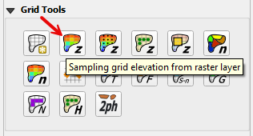

2. Grid Elevation from Raster Layer
To interpolate the elevation to a grid layer from a raster layer, use the Sampling Grid Elevation from Raster Layer button.
Overview
A raster file is a geo-referenced image file with band data assigned to pixels aligned in column and row. In this case, the bands are elevation.
Important properties:
This tool uses a Warp so the raster may not need to have the same coordinate reference system (CRS) as the project. A warp is a transformation so it should not require that the starting coordinate system is the same.
Do not use a grid cell size that is smaller than the raster pixel size.
The raster warp method uses a weighted average and the final elevation of every grid element depends on what percentage of the source pixels cover each grid element.
Elevation vertical data may need to be converted. For example, USGS data is in meters. Use a Raster calculator to convert it to feet.
Sample Elevation
Click the Sampling Grid Elevation Button and enter the required data in the dialog fields as shown below.
Select the Fill NODATA option if some grid elements are not covered by pixels.
Note
This is only necessary if there are empty raster pixels. It happens when LiDAR data is rasterized leaving out buildings, overpasses, and such.
Click OK. When the elevation sampling is completed, close the Sampling Done box.
The NODATA value is only used when the Fill NODATA option is checked. The raster properties list the NODATA value.

Troubleshooting
If the project or the data is on a server, this function may fail. Ensure all data is on the computer drive.
If the raster has the wrong Coordinate Reference System (CRS) or does not have complete coverage, the following message will be displayed. Save the raster with the correct CRS and make sure it has complete coverage.

If the “Sample Done” box is displayed but the grid table still has -9999 as the elevation, the raster CRS is not being read correctly. Save the raster as a new layer and assign the correct CRS. It is likely that the alignment does not match the coordinate system.